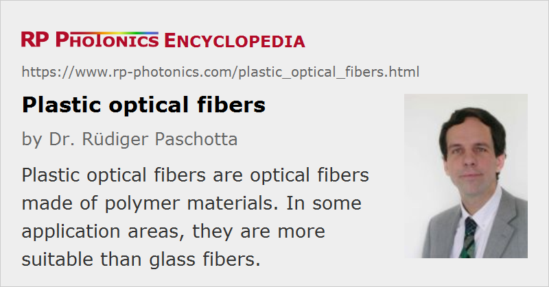

Plastic Optical Fibers
Acronym: POF
Definition: optical fibers made of polymer materials
More general term: optical fibers
German: optische Plastikfasern
Category: fiber optics and waveguides
How to cite the article; suggest additional literature
Author: Dr. Rüdiger Paschotta
Plastic optical fibers are optical fibers made throughout of polymer optical materials. Both the fiber core and the cladding consist of polymers, not only some buffer coatings and jackets. While plastic optical fibers can by far not reach the performance of glass fibers in various respects such as propagation losses and data transmission capacity, they are mechanically more robust and allow for cheaper fiber-optic solutions in some application areas. A typical application is short-range optical data transmission e.g. within industrial environments, homes and cars, where the simpler handling and greater robustness are beneficial, whereas the higher propagation loss is acceptable. POF are also used for illumination purposes, where they distribute light which is generated e.g. with light-emitting diodes.
PMMA (acrylic), polystyrene and polycarbonates are often used for cheap fiber-optic mass applications. As a typical example, a POF may have a PMMA core surrounded by a fluorinated cladding, having a lower refractive index. Alternatively, the core may be doped with some index-raising agent. For high data rates, however, certain perfluorinated polymers such as poly(perfluoro-butenylvinyl ether) are preferred, as they exhibit much lower propagation losses and can be operated at longer wavelengths, where transmitters and receivers as developed for glass fibers can be used. Even with such PVBVE fibers, for example, the propagation losses are typically still of the order of 50 dB/km, i.e., several orders of magnitude higher than for glass fibers.
A relatively novel and not yet widely used development is that of photonic crystal fibers realized with plastic materials.
Fabrication of Polymer Fibers
Plastic optical fibers can be drawn from preforms in a similar process as often used for silica fibers, only with a much lower temperature (e.g. 200 °C) of the preform. The preform may be fabricated starting with a hollow tube of the cladding material, which is then filled with a liquid mixture of the monomer and some reactive agents for polymerization of the core. Alternatively, a dopant may be applied to the inner surface of the tube and diffused into the material, and later on the tube is collapsed. Such processes can be tuned to obtain a variety of refractive index profiles.
An alternative to preform-based method is the use of extrusion processes. Such techniques have originally been used for step-index PMMA fibers, but there also variants for perfluorinated materials. Even though only two different polymer materials are fed into the extruder, gradient-index designs can be realized by employing a carefully controlled diffusion process.
Comparison with Glass Fibers
Plastic optical fibers strongly differ from glass fibers in various respects:
- Many POF have their loss minimum at visible wavelengths, or in the near infrared (at < 1.3 μm) in case of perfluorinated polymers. For comparison, silica fibers have their loss minimum at > 1.5 μm, and some other glasses even at much longer wavelengths.
- A typical POF has high propagation losses of e.g. 50 or 100 dB/km, whereas silica fibers can achieve a few dB/m (multimode fibers) or even well below 1 dB/km (single-mode fibers). Therefore, data transmission with POF is limited to much shorter distances.
- POF are usually multimode fibers with a large core (diameter of the order of 1 mm) and a high numerical aperture (e.g. 0.4), thus supporting a large number of guided modes. This is beneficial when light-emitting diodes are used as data transmitters. In the same way as for glass fibers, intermodal dispersion can be minimized by using graded-index profile designs. POF appear not to be suitable for single-mode guidance.
- POF are mechanically more robust and flexible. Their multimode guidance with a large core and high NA greatly relaxes the tolerances for connectors, so that simple plastic parts can be used and no sophisticated training is required. Due to these reasons, and not cheaper materials, POF allow for substantial cost savings in various applications.
- POF cables can be thinner and more lightweight than mechanically well protected glass fiber cables.
Optical data transmission with plastic optical fibers is expected to find an expanding volume of applications in consumer markets (e.g. home networks), the automotive and aircraft industry. Illumination is the other important application area, which profits from the rapid improvement of light-emitting diodes.
Suppliers
The RP Photonics Buyer's Guide contains 12 suppliers for plastic optical fibers.
Questions and Comments from Users
Here you can submit questions and comments. As far as they get accepted by the author, they will appear above this paragraph together with the author’s answer. The author will decide on acceptance based on certain criteria. Essentially, the issue must be of sufficiently broad interest.
Please do not enter personal data here; we would otherwise delete it soon. (See also our privacy declaration.) If you wish to receive personal feedback or consultancy from the author, please contact him e.g. via e-mail.
By submitting the information, you give your consent to the potential publication of your inputs on our website according to our rules. (If you later retract your consent, we will delete those inputs.) As your inputs are first reviewed by the author, they may be published with some delay.
See also: fibers, multimode fibers, fiber optics
and other articles in the category fiber optics and waveguides
|  |
If you like this page, please share the link with your friends and colleagues, e.g. via social media:
These sharing buttons are implemented in a privacy-friendly way!